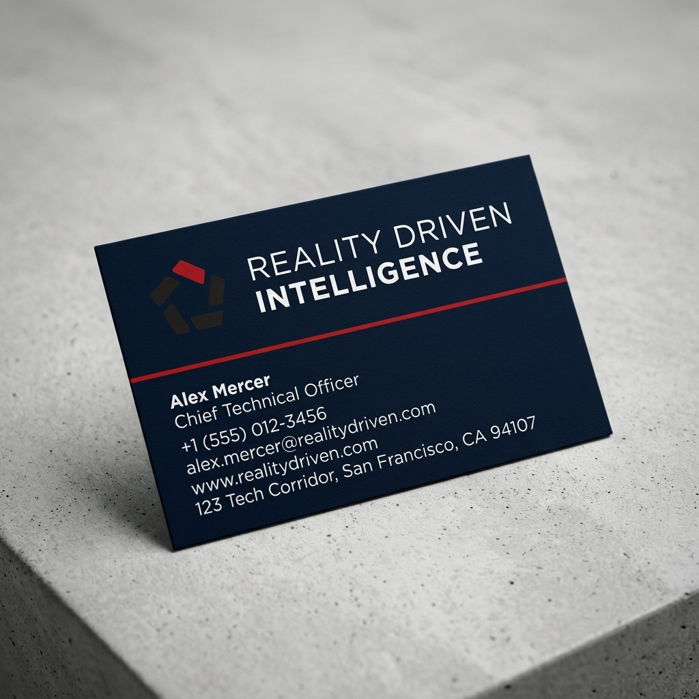
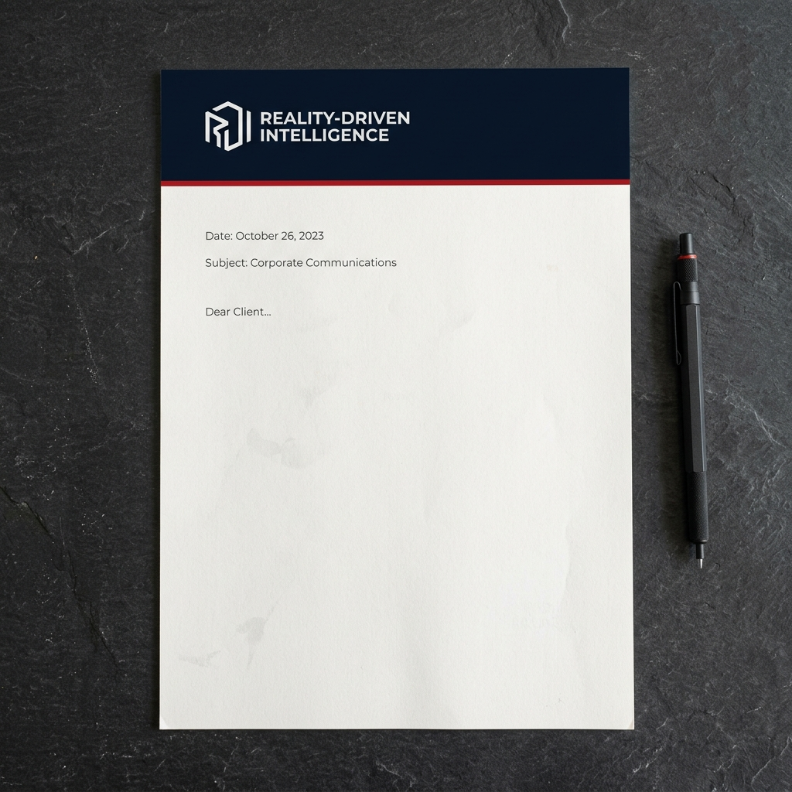
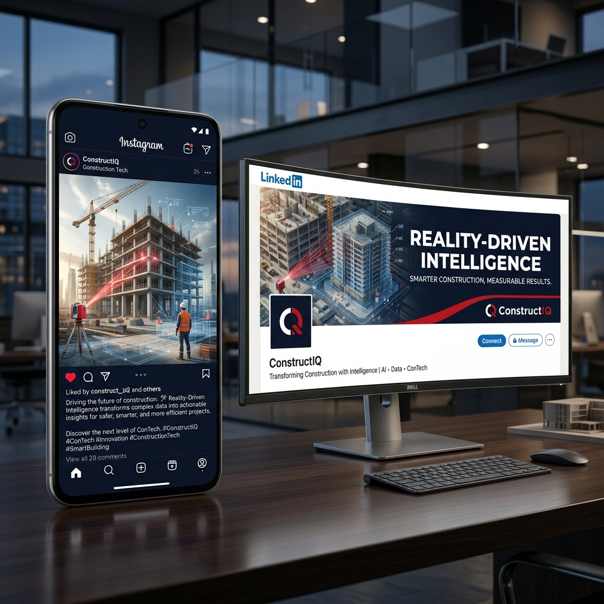

Master codec
ProRes 422 HQ
Brand Bible · v1.0
RDI is the discipline of turning continuous site reality — captured by cameras, sensors, and the people on the ground — into structured intelligence that machines and decision-makers can both use.
It is not a product line. It is a way of working.
Grounded. Precise. Quietly authoritative. We speak in observations and evidence, not slogans. We earn trust by being legible.
We frame what matters and leave the rest. Wide enough to see context, narrow enough to act. Every page, every frame, every line of copy is a viewfinder — purposeful, attributed, dated.
If a creative direction can't be justified against at least one of these, it doesn't ship.
If an element doesn't qualify a message, remove it. The brand reads as discipline because we don't crowd the page.
Show the data, the frame, the timestamp. Then make the claim. Reversing this order — claim first, evidence later — undermines trust.
Grids, rules, type rhythm, the red line — these are not styling. They are the brand. Honor them in every medium.
One red line on a page is powerful. Four is a website circa 2008. Use brand assets sparingly.
Five facets describe a closed aperture rotating into focus. The red wedge marks the active viewing angle — the single decision being made right now — while the four neutral facets hold the surrounding context steady. The form is a fingerprint for the discipline: structured, deliberate, capable of being held in one symbol.
Always Signature Red (#C3161C). The single point of attention; never changes color except in the Reverse Signature lockup, where it turns white to avoid disappearing.
Ink (#231F20) on light surfaces, White on dark. The aperture's surrounding frame.
Built on a five-facet pentagonal rotation. Spacing between facets is fixed in the master SVG; never recompose.
One wordmark, three colourways, four authorised surfaces. The background determines the colourway — never pick by taste.
The default logo is always black + red — the brand colours, on any light surface. Two darktheme variants exist, and which one you use is determined by the background:
Never pick a colourway by taste. The background dictates the rule.
Minimum on every side equals the height of one facet of the mark. No element — text, image, edge, rule — enters that zone.
Mark only: 24px tall on screen, 6mm in print. Full lockup: 120px wide on screen, 30mm in print. Below these, switch to mark-only or omit the brand entirely.
Signature Red anchors action and emphasis. Ink and Navy carry weight. Neutrals do most of the talking.
This rule applies brand-wide — print, web, video, signage, social, packaging. No red headings, no red eyebrows, no red links, no red captions, no red alert messages. Red appears only as a fill (CTAs, the wedge), a border or rule (the red line — §06), or a non-text icon. Error states use a red border + Red Soft fill with Ink text inside. The text inside an error is never red.
Brand
Neutrals
Signal
Error red is held distinct from Signature Red so a primary CTA and a field error can sit on the same surface without colliding. On dark surfaces, the lightened Red on Dark (#E5363D) replaces Signature Red for any visible red mark — Signature Red on Navy reads only at 3.1:1 contrast and fails WCAG AA.
Inter across the board — display weights for editorial moments, regular for everything legible. JetBrains Mono for code, metadata, and numbers that must not lie.
A single shape — a thin red rectangle — used in three configurations. It is the only way red touches the type system. The line qualifies; it never decorates.
Horizontal under main titles. 64×3px (24×1mm in print) sits directly under the section's H1/H2, 16–20px gap, left-aligned. The eyebrow above is plain capital text — the rule lives under the title, never beside the label. Switches to #E5363D on dark surfaces.
Grounded, precise, quietly authoritative. We speak in evidence, not slogans.
Vertical on the left of a title container. 3px rail attached to the container that holds the title + its body — not the title element alone. The rail spans the full height of that block, anchored top-left, with 18–21px padding. Putting the rail on just the title makes it look "over-margined" — floating off-edge from its content. On reveal, the rail draws top-to-bottom in 400–600ms ease-out soft — same reading direction as the horizontal line's left-to-right motion. Used on pillars, sidebar callouts, governance cards, principle items, pull-quotes. One-sided — never bracketed.
Hover & active. 2px line appears or thickens on interactive elements. Underline weight on links, left rail on nav tabs, bottom border on ghost buttons. 120ms ease — never longer or more elaborate.
In video, the red line is a draw-on animation: enters from the left over 400–600ms with an ease-out curve and locks. Never pulses, blinks, fades in/out, or gets fancier than the initial draw.
Icons in RDI are structural, like the mark. They name a noun or a verb and step out of the way. Built on a 24×24 grid with 2px keylines, square caps, miter joins. Ink by default; never red except for state-bearing wedges. No multicolor, no filled bubbles, no emoji-as-icon.
For state-bearing icons (active, in-progress, focused), the icon carries a small red dot in the upper-right quadrant — the icon-level equivalent of the red line. A dot is more accurate than a wedge here: small, unambiguous, doesn't compete with the icon's own geometry. Use sparingly. One dot per icon. Never two adjacent icons with dots.
Top row: default Ink icons. Bottom row: same icons with the red dot indicating active state. The library shown is illustrative — production icons come from Lucide for utility, with a bespoke RDI set for marketing surfaces (v2).
We show real construction sites, real cameras, real conditions. We don't show stock or AI-rendered "construction." The RDI thesis is that the frame already has the truth — we can't sell that with imagery that isn't true.
A timestamped frame from a real camera. Natural color, slight desaturation. The red wedge marks the region of interest; the mono stamp gives source + time.
People on the ground, real conditions, real evidence. Process moments — pours, lifts, deliveries, inspections — beat staged poses every time.
No oversaturated, gloss-y stock treatment. No hard-hat-and-tablet clichés. No glamour drone shots that hide context. No AI-generated "site" imagery — it undermines RDI's entire thesis.
Color: natural and slightly desaturated. No heavy filters, no Instagram warmth. Crop: respect the original framing — the frame already has the truth. Annotations: timestamps and camera IDs in Mono; the red wedge for focus; nothing else on the image. The red wedge is the only red element permitted on a photograph.
Motion
Brand motion is restrained. RDI doesn't bounce. The aesthetic is a measurement tool clicking into place, not a festival. Every animation below is real — playing right now in your browser at the actual brand timing. If something on a delivered video doesn't move like this, it's not brand-compliant.
The open sequence loops on a 4-second cycle. Navy fades up, the four ink facets build, the red facet snaps, the wordmark types in left-to-right, the red line draws under, the composition holds, then fades out and restarts.
The dots travel the same distance over the same duration. The curve is what makes one read as RDI and the others read as wrong. Watch how the bounce variant overshoots and corrects — that's the disqualifying tell.
A full-frame title at broadcast scale. Eyebrow lands first, the title fades up 8px from below, the 96×3px red line draws across in 400ms ease-out soft. Hold for the reading window, then dissolve. This is the standard slate for section openings, sponsor cards, and end-of-segment outros.
Speaker name and affiliation over a real captured frame. The 3px red rail anchors the block; the name reads in Inter Semibold; the affiliation runs in Mono so dates and source codes stay legible. The whole block slides up from below the safe area on entry.
Four numbers a motion designer needs at-hand. Full codec, frame-rate, and loudness reference lives in GUIDELINES.md §9.
Authorised transitions: cut · fade-through-black · red-line wipe · mark-fold. Anything else (star-wipes, cube-flips, blur-zooms, glitch-cuts) is off-brand. Captions are not optional — every RDI video ships with SRT/VTT.
RDI sounds like a field report, not a whitepaper. Observations are attributed and dated. Numbers go in Mono. Verbs over adjectives. No superlatives. No "powerful." No "AI" without saying what the AI does.
An observation: source, count, location, time. The reader can verify it.
No source, no number, no time. Three superlatives, zero evidence. This is a brochure pretending to be a report.
Verbs. Specifics. Process, not magic.
"Seamless," "end-to-end," "intelligent," "next-generation" — four words that say nothing. Cut all four.
Business cards, letterhead, posters, signage. The same rules apply on paper as on screen — Navy or Paper, red as fill never text, mono for numbers. The mockups below are the production templates the designer references when laying out the real prints. Technical specifications (paper stocks, file formats, binding, finishes, proofing) live in GUIDELINES.md §11.
Photoreal studio renders of the two stationery cornerstones. The card uses the default colourway (Ink wordmark + red wedge on Paper). The letterhead carries a Mono reference block top-right and a small red rule under the salutation.

Inter + JetBrains Mono · red rule for hierarchy

Navy header · Mono ref block · red accent
Both surfaces follow the same logic: Navy field, white wordmark in the upper third, title in white with the red rule below, optional photography or wedge motif on the lower half.
A4 · 300gsmA1 · 200gsm satinA5 folded one-pager for handouts, site notebook for field use, DL envelope for letterhead. Each carries the same brand cue — the mark, the red line, the mono attribution.
Camera evidence reconstructs the pour timeline. Each frame is timestamped and source-tagged. The pipeline cross-checks the reconstructed timeline against the as-built schedule and surfaces the deltas.
Read more at evercam.io / rdi / workflows
148 × 210mm · 120gsm uncoatedA5 · gridded · uncoated cover110 × 220mm · 100gsmFor construction-fence boards, wayfinding signs, and on-site presence. Navy or Ink ground, white wordmark, mono camera reference, weather-rated 4mm Dibond.
1200 × 800mm · 4mm Dibond · UV printA3 · post-mounted · matteSocial is where RDI meets strangers. Cadence and archetype balance matter more than reach — the bar is accurate brand representation, not algorithm engagement. The templates below are the production references for posts, headers, and avatars across LinkedIn, Instagram, and X. Strategy, copy templates, and measurement live in GUIDELINES.md §12.
Photoreal studio renders of the LinkedIn and Instagram surfaces. Navy backgrounds for impact, red rule for hierarchy, mono attribution for source.

Three post archetypes — Observation · Concept · Workflow
Below: avatar, LinkedIn header, and the three post archetypes as editable vectors. Use these as the build templates when producing live posts in Figma.
Rotated in 1-1-1 cadence. Never two of the same archetype back-to-back in the grid.
Observation
We frame what matters and leave the rest. Wide enough to see context, narrow enough to act.
Concept
Four steps from frame to decision.
Capture → Structure → Verify → Report
Workflow
Three posts per week, rotating the archetypes 1-1-1. Mon/Wed/Fri so the work lands on B2B reading hours. Weekends are off — B2B engagement collapses, and so should the feed.
Sentence case. Numbers in Mono where the platform supports rich text. No emoji. No "Click here." Sign observation posts with the source tag.
The preferred long-form format. 12–24 slides at 1080×1080, exported as a single PDF. Use for methodology explainers, customer case studies, annual reports. Cover slide on Navy, body slides on Paper, end-card with the next-step link.
RDI's audience is small, specific, and worth knowing by name. Five reposts from the right ten leaders matter more than 50,000 algorithm-noise impressions. Optimise for the right reader, not the loudest metric.
The metric that matters most. A follower visiting the bio and clicking through to the portal means the social presence did its job.
DMs and emails referencing a specific post. One serious customer conversation per month from a single post justifies the post.
Healthy above 3% on LinkedIn. Below 1% sustained means the message isn't landing — investigate before scaling.
Vanity metric. Useful for noticing decline (30%+ drop signals an issue), not for celebrating growth.
RDI is a sub-brand. When the two appear together, one is always primary; the other defers. Never side-by-side as equals.
brand/assets/evercam-logo.svg and is the only thing that needs swapping.
RDI-led contexts: RDI lockup primary, "an Evercam discipline" line beneath in Small/Mono. Evercam-led contexts: Evercam lockup primary, RDI appears as a labeled product/discipline area inside the Evercam shell. When both marks appear in one lockup, separate with a 1px vertical rule in --rdi-rule-strong, 16px clearspace on each side — never a slash, never a plus sign.
A formal Evercam brand book will define parent-side rules. Until it exists, treat Evercam's existing identity as the parent's territory and avoid using it inside RDI surfaces.
Office, event, and site signage shares the system: Navy or Ink ground, white wordmark, red wedge or red line as the only color accent. Materials prefer matte over gloss.
Two masters: an external pitch deck (Navy covers, Ink body slides, red line under each H2, mono numbers) and an internal working deck (Paper background, lighter weight, more density). Both use the type and color tokens. No clip art, no gradients, no template-y slides.
If RDI does swag, it's functional and restrained: site notebooks (uncoated, gridded, mark on the cover), pens (Ink with red wedge clip), tape measures, hard-hat stickers. No t-shirts with the wordmark four times. No tote bags as conference giveaway slop.
A brand without restraint becomes wallpaper. If a surface doesn't earn the mark, leave it blank or use the mark alone — never inflate the wordmark to fill space.
This bible is the single source of truth for the brand. Changes to any rule are proposed against the canonical text (GUIDELINES.md) and require the brand owner's sign-off.
Owns all brand-implementation decisions. Approves changes to identity, color, type, the red line pattern, iconography, photography direction, motion, print, social, and co-branding rules.
Kamel Badji
Ux / Ui / Brand designer
kamel.badji@evercam.io
Consulted on strategic direction (positioning, naming, major launches). Does not own brand-implementation decisions; those rest with the brand owner.
Marco
CEO, Evercam
This bible is the visual document. Its text counterpart is D:\Evercam rdi\brand\GUIDELINES.md. The engineering implementation lives in D:\Evercam rdi\brand\DESIGN-SYSTEM.md and the matching visual reference is design-system.html. Machine-readable tokens live in rdi-tokens.tokens.json.
Two Cowork skills load these rules into Claude automatically: rdi-brand (brand) and rdi-design-system (engineering). Both read from the canonical files directly — no copies, no mirrors, no drift.